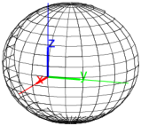

27.12.4 Rotation in space
See Section
26.14.4
for rotations in the plane.
The
rotation
command creates a rotation.
rotation
takes two mandatory arguments and one optional argument:
L
, a line (to rotate about).
θ, the angle of rotation.
Optionally,
G
, a geometric object.
rotation(
L
,θ
)
returns a new command which rotations about
L
through an angle of θ.
reflection(
L
,θ,
G
)
returns and draws the rotation of
G
about
L
through an angle of θ.
Examples
S
:=
sphere
([1,0,0],0.5);
r
:=
rotation
(
line
(
point
(0,0,0),
point
(0,0,1)), 2*
pi
/3);
color
(
S
,
blue
),
r
(
S
)

rotation
(
line
(
point
(0,0,0),
point
(0,0,1)), 2*
pi
/3,
S
)